Avant la bouteille, il y a
le verger
deFougerolles
Photo d’illustration
Scannez, découvrez la gamme !
__QR__

La fermeTisserand
Kirsch AOC · Mirabelle · Poire Williams
Prune · Liqueurs · Apéritifs
L’abus d’alcool est dangereux pour la santé, à consommer avec modération.